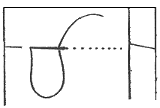
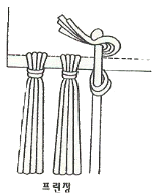
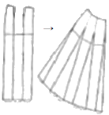
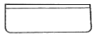
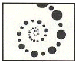

양장기능사 (2006-04-02 기출문제)
1과목: 임의 구분
1. 그림은 어떤 시침 방법인가?

- 숨은 상침
- 보통 시침
- 반 박음질
- 온박음질
(정답률: 60%)

2. 의복 원형의 세 가지 기본 요소는?
- 길, 소매, 스커트
- 길, 칼라, 슬랙스
- 재킷, 바지, 스커트
- 뒤판, 스커트. 슬랙스
(정답률: 100%)
3. 목 앞점과 목 뒷점을 자연스런 곡선으로 연결 하였을때 그 곡선의 목 둘레선과 어깨 끝점선과 만나는 점은?
- 목 앞점
- 목옆점
- 목 뒷점
- 어깨 끝점
(정답률: 95%)
4. 재단 후 실표뜨기(표시뜨기)를 할 때 사용하는 실로서 가장 적합한 것은?
- 직물의 색과 동일한 무명 실
- 백색의 굵은 무명 실
- 직물의 색과 동일한 명주 실
- 흑색의 굵은 나일론 실
(정답률: 93%)
5. 다음 중 단촌식 제도법에 대한 설명이 아닌 것은?
- 인체의 각 부위를 세밀하게 계측하여 제도하는 방법이다.
- 다양한 체형특징에 잘 맞는 원형을 얻을 수 있다.
- 대표가 되는 부위의 치수만으로도 제도가 가능하다.
- 숙련된 기술이 필요하므로 초보자에게는 바람직하지 못한 방법이다.
(정답률: 79%)
6. 안감이 갖추어야 할 조건 중 가장 부적당한 것은?
- 가볍고 겉감이 잘 어울러져야한다.
- 내구성 적고 또한 젖었을 경우에는 수축성이 적어야 한다.
- 조형면에서 실루엣을 살릴 수 있도록 적당한 강성을 가져야한다.
- 착용감이 좋고 통기성과 흡수성이 커야 한다.
(정답률: 62%)
7. 튼튼한 실을 사용하면 강도가 강한 땀을 만들 수 있고 또 땀도 간단하게 구성되기 때문에 가죽이나 두꺼운 천의 바느질에 쓰이는 땀(stitch)은?
- 단환봉
- 특수봉
- 본봉
- 2중환봉
(정답률: 54%)
8. 합성섬유를 다림질할 때 경화현상과 관계가 먼 것은?
- 가열로 섬유가 연화되어 섬유 자체가 융착하고 냉각 후에도 그대로 굳는 현상
- 비닐론, 아세테이트등을 고온으로 가열하면 나타나는 현상
- 수분이 있을 때 더 심하게 나타나는 현상
- 고온으로 다리면 열에 약한 염료가 변색되는 현상
(정답률: 47%)
9. 어깨의 숄더다트와 웨이스트 다트를 연결하는 선으로 이루어지는 것은?
- 네크 라인
- 샤넬 라인
- 프린센스 라인
- 웨이스트 라인
(정답률: 84%)
10. 재봉틀 작업을 할때 잘못된 자세는?
- 재봉틀 테이블에서 15cm정도 떨어져 바르게 앉는다.
- 몸의 중심(코)과 바늘대가 일치하게 위치를 정한다.
- 어깨에 힘을 주고 상체를 똑바로 한다.
- 발판에 발의 위치를 엇비껴놓는다.
(정답률: 74%)
11. 다음의 소매구성 중 길과 소매가 연결되지 않은 것은?
- 래글런 슬리브
- 퍼프 슬리브
- 기모노 슬리브
- 돌먼 슬리브
(정답률: 65%)
12. 다음 중 실표나 시침질을 뽑을 때 사용하는 공구로서 가장 적당한 것은?
- 끝
- 뼈인두
- 송곳
- 족집게
(정답률: 89%)
13. 패턴 배치로 잘못된 것은?
- 체크무늬는 옆선의 무늬를 맞추어 배치한다.
- 패턴은 작은것부터 배치한다.
- 패턴은 옷감의 안쪽에 배치한다.
- 짧은 털이 있는 옷감은 털의 결 방향을 위로 배치한다.
(정답률: 82%)
14. 다음 중 손으로 실 단추구멍, 훅과 아이 ,스냅 등을 달 때 사용하는 손바느질의 방법은?
- 실표뜨기
- 버튼홀스티치
- 새발뜨기
- 감침질
(정답률: 69%)
15. 상완의 어깨부분이 앞으로 휘었고 팔에 살이 쪄서 앞 소매에 소매산을 향한 주름이 생길 때의 보정으로 맞는 것은?
- 소매둘레를 파준다.
- 소매산 중심점을 뒤로 이동하고, 소매산 선의 곡선은 옆으로 이동시켜 선을 정정한다.
- 소매산 중심점을 앞으로 이동하고, 소매산 선의 곡선도 앞으로 이동시켜 선을 정정한다.
- 소매중심선을 절개한 후 적당하게 좁혀준다.
(정답률: 42%)
16. 다음 중 제도한 패턴에 표시하지 않아도 되는 부분은?
- 중심선
- 안단선
- 시접
- 단추위치
(정답률: 74%)
17. 다음중 옷감과 변형에서 오그리기를 하여야 하는 부분이 아닌것은?
- 어깨부분
- 허리부분
- 바지의 밑 위 부분
- 소매산 부분
(정답률: 58%)
18. 10대 소녀들에게 많은 체형으로 항상 바른자세를 유지하는 이들에게서 볼 수 있으며 나이가 많은 사람도 이런 체형일 경우에는 보다 젊어진다.상체가 곧고 가슴이 높게 솟아 있으며 엉덩이는 풍만하고 배가 평편한 자세인 체형은?
- 후경체
- 굴신체
- 편평체
- 반신체
(정답률: 65%)
19. 다음중 시접의 분량으로 가장 적합한 것은?
- 목둘레 2cm
- 진동둘레 0.5cm
- 소매단 7cm내외
- 어깨와 옆선 2cm
(정답률: 84%)
20. 다음 그림이 나타내는 장식 바느질의 종류는?

- 아플리케
- 컷워크
- 프린징
- 퀼팅
(정답률: 86%)
2과목: 임의 구분
21. 재봉할 때 봉제 천에 비하여 바늘이 굵은 경우 일어나는 현상은?
- 땀뜀 현상이 일어난다.
- 천의 보내기 운동이 불량하다.
- 재봉틀의 노루발이 장애를 일으킨다.
- 천에 버커링이 발생한다.
(정답률: 63%)
22. 다음 그림은 어떤 스커트를 만들기 위해 옷본을 변형한 것인가?

- 플레어 스커트
- 타이트 스커트
- 고어 스커트
- 맞주름 스커트
(정답률: 75%)
23. 가봉 및 보정에서 일반적인 주의사항중 틀린것은?
- 바늘은 직각으로 꽂아 옷감이 울지않고 실이 늘어지지 않게 한다.
- 바이어스 감과 직선으로 재단 된 옷감을 붙일 때는 바이어스감은 아래로 겹쳐놓고 바느질한다.
- 바느질은 손바느질의 상침 시침으로 한다.
- 작은 조각 이외에는 일반적으로 재봉대 위에 펴놓고 왼손으로 누르면서 오른쪽에서 왼쪽으로 시침한다.
(정답률: 58%)
24. 마름질하는 순서가 올바르게 나열된 것은?
- 길, 소매, 칼라, 주머니
- 칼라, 소매, 주머니, 길
- 소매, 칼라, 길, 소매
- 주머니, 칼라, 길, 소매
(정답률: 72%)
25. 다음 중 니트의 솔기 처리법으로 바른 것은?
- 성긴 직선박기
- 촘촘한 직선박기
- 인터록 박기
- 지그재기 박기
(정답률: 77%)
26. 부호가 의미하는 것은?
- 올 방향
- 바이어스 표시
- 치수보조선
- 꺽임선 표시
(정답률: 84%)
27. 그림의 포켓이름은?

- 플랫포켓
- 웰트 포켓
- 패치 포켓
- 입술 포켓
(정답률: 59%)
28. 직접원가에 제조간접비를 합친 것은?
- 제조원가
- 간접원가
- 판매원가
- 총원가
(정답률: 70%)
29. 다음 중 보정방법중 적합하지 못한 것은?
- 목둘레선이 들뜨는 것은 목둘레가 커서 생기는 현상으로 목둘레선을 높여 앞 뒤판을 맞춘다.
- 앞뒤 어깨선에 타이트한 주름이 생길 경우(어깨가 솟은 경우)에는 어깨선을 올려 보정하고 그 분량만큼 진동 밑부분을 올려준다.
- 어깨가 당길 때는 B.P를 지나 다트의 중간과 어깨분위에 선을 넣어 늘어지는 부분이 없어지도록 접어 준 다음 다트를 다시 잡아준다.
- 진동둘레가 너무 좁은 경우에는 가위집을 넣은 후 새로운 진동선을 그린다. 진동 밑부분을 파 주고 소매도 같은 분량만큼 진동둘레를 낮추어 수정한다.
(정답률: 57%)
30. 다음의 자재소요량 산출 방법 중 봉사의 소요량산출에 관한 직접적인 요인이 아닌 것은?
- 천의 두께
- 스티치의 길이
- 봉사의 굵기
- 작업자의 작업방식
(정답률: 78%)
31. 알칼리 감량가공으로 실크에 가까운 섬유를 얻을 수 있는 것은?
- 나일론
- 아크릴
- 아세테이트
- 폴리 에스테르
(정답률: 50%)
32. 레이온의 강도가 물속에서 약해지는 결점을 보완한 섬유로 옳은 것은?
- 나일론
- 구리암모늄 레이온
- 폴리노직 레이온
- 초산섬유소 레이온
(정답률: 75%)
33. 섬유의 단면이 삼각형인 것은?
- 견
- 면
- 모
- 마
(정답률: 94%)
34. 옷에 녹(철분)이 묻었을때 제거 방법은?
- 수산액으로 빤다
- 벤젠으로 빤다.
- 알콜로 빤다.
- 더운물로 빤다.
(정답률: 63%)
35. 다음 중 비교적 짧고 저급 양모를 가지고 제조하여 부피가 큰 실은?
- 카드사
- 코머사
- 방모사
- 소모사
(정답률: 53%)
36. 길이 1,000m당 무게를 g으로 나타내는 섬유의 굵기 표시단위는?
- 데니어식(denier)
- 텍스식(Tex)
- 메터식(Nm)
- 영국식(Ne)
(정답률: 69%)
37. 부직포의 특징이 아닌 것은?
- 마찰에 강하다
- 방향성이 없다
- 드레이프성이 부족하다
- 절단부분이 풀리지 않는다
(정답률: 50%)
38. 천연고무와 가장 유사한 성질을 가진 합성섬유는?
- 나일론
- 스판덱스
- 비닐론
- 비스코스
(정답률: 86%)
39. 다음 중 수분을 흡수함으로써 강력이 가장 증가하는 섬유는?
- 양모
- 무명
- 비스코스 레이온
- 나일론
(정답률: 70%)
40. T/W는 어떤 섬유의 혼방을 나타내는가?
- 폴리에스테르와 무명
- 폴리에스테르와 양모
- 나일론과 양모
- 폴리아미드와 폴리 우레탄
(정답률: 58%)
3과목: 임의 구분
41. 빨간 성냥불을 어두운 곳에서 돌리면 길고 선명한 빨간 원을 그린다. 이것을 색채의 어떤 지각현상 때문인가?
- 색음 현상
- 색의 잔상
- 동화 현상
- 색채 대비
(정답률: 82%)
42. 다음 중에서 채도가 가장 높은 색은?
- 다홍
- 청록
- 감청
- 노랑
(정답률: 50%)
43. 삼각형 실루엣이 아닌 것은?
- 튜블러 실루엣(Tubular silhouette)
- 텐트 실루엣(Tent silhouette)
- 트라이 앵귤러 실루엣(Triangular silhouette)
- 트라페즈 실루엣(Trapeze silhouette)
(정답률: 56%)
44. 의복배색의 일반적인 경향으로 겨울의 복식 배색에 가장 효과적인 색은?
- 검정과 감색
- 흰색과 파랑
- 파랑과 연두
- 귤색과 녹색
(정답률: 80%)
45. 다음 중 키가 크고 마른 체형에 부적절한 디자인은?
- 넓은 벨트와 커다란 액세사리를 이용한다
- 부풀고 광택이 있는 재질을 이용한다.
- 프린센스 라인을 이용한다.
- 스커트는 길고 풍성한 스타일을 이용한다.
(정답률: 59%)
46. 다음 중 화려함과 수수함의 느낌을 가장 크게 좌우하는 색의 요소는?
- 색상
- 명도
- 채도
- 휘도
(정답률: 45%)
47. 다음 중 색상에 대한 설명으로 잘못된 것은?
- H로 표시한다
- 색상은 유채색에만 있다
- 색상환에서 바로 옆에 있는 색을 인근색이라고 한다
- 색상환에서 90도 각도의 위치에 있는 색을 보색이라고 한다.
(정답률: 43%)
48. 색과 색의 근접하는 경계에서 색의 변화가 강하게 일어나는 대비는?
- 보색대비
- 면적대비
- 한난대비
- 연변대비
(정답률: 29%)
49. 다음의 설명중 잘못된 것은?
- 어떠한 색상의 순색에 무채색의 포함량이 많을수록 채도가 높아진다.
- 색의 3속성을 3차원의 공간 속에 계통적으로 배열한 것을 색입체라고 한다.
- 무채색은 시감 반사율이 높고 낮음에 따라 명도가 달라진다.
- 보색인 두 색을 혼합하면 무채색이 된다.
(정답률: 48%)
50. 그림과 같은 복식의 무늬에서 강하게 얻을 수 있는 점의 느낌은?

- 운동감
- 온도감
- 면적감
- 평면감
(정답률: 80%)
51. 의류의 세탁에 대한 설명으로 알맞지 않는 것은?
- 세탁온도는 일반적으로 약 35-40도가 적당하다
- 경수에서는 섬유의 종류에 관계없이 비누보다는 합성세제를 사용하는 것이 좋다
- 합성세제는 양모나 견에서는 알칼리성 세제, 면이나 마에서는 중성세제를 사용한다.
- 세제는 약 0.2~0.3%의 농도에서 최대의 세탁효과를 나타낸다.
(정답률: 67%)
52. 다음 중 경사(날실)에 해당되는 것은?
- 한쪽이 줄무늬이고 다른쪽이 무지일 경우 대게 줄무늬가 없는 쪽의 실이다.
- 직물의 밀도가 많은 쪽의 실이다.
- 된꼬임 직물에서는 꼬임이 많은 실이다.
- 견본에 가장자리가 붙여 있을 때에는 가장자리와 직각으로 배열된 실이다.
(정답률: 31%)
53. 흡습성이 가장 크게 요구되는 피복류는?
- 겉옷
- 속옷
- 작업복
- 양말
(정답률: 77%)
54. 경파일 조직으로 짧고 부드러운 솜털이 있는 소재는?
- 우단(velveteen)
- 색소니(saxony)
- 벨벳(velvet)
- 코더로이(corduroy)
(정답률: 82%)
55. 다음 중 편물의 특성을 바르게 나타낸 것은?
- 신축성이 적어 잘 구겨진다.
- 직물과 비교하여 통기성이적다.
- 컬업(curl up)성이 있어 재단과 봉제가 어렵다.
- 편물은 실용성이 적고 사치성이 있어 경제성이 있다.
(정답률: 89%)
56. 섬유분류와 그 종류가 옳게 연결된 것은?
- 폴리아미드계- 데이크런
- 폴리비닐알코올계- 스판덱스
- 폴리프로필렌계- 사란
- 폴리아크릴로니트릴계- 엑스란
(정답률: 64%)
57. 드라이클리닝의 장점이 아닌 것은?
- 세탁물의 변형이 거의 없다.
- 건조가 빠르고 손질이 간편하다.
- 친수성 오점의 제거가 용이하다.
- 세탁 중 염료에 의한 재오염이 없다.
(정답률: 67%)
58. 주자조직에서 어떠한 1올의 실의 교착점에서 바로 인접하고 있는 그 다음 실의 교착점까지의 거리인 실 올수를 무엇이라 하는가?
- 1완전조직
- 뜀수
- 주자선
- 겹조직
(정답률: 64%)
59. 의복변형의 원인과 관계가 가장 적은 것은?
- 수축과 신장
- 변색과 퇴색
- 탄성과 레질리언스
- 찢어짐과 터짐
(정답률: 64%)
60. 드레이프성이 가장 좋은 직물은?
- 실크
- 광목
- 모시
- 아마
(정답률: 60%)